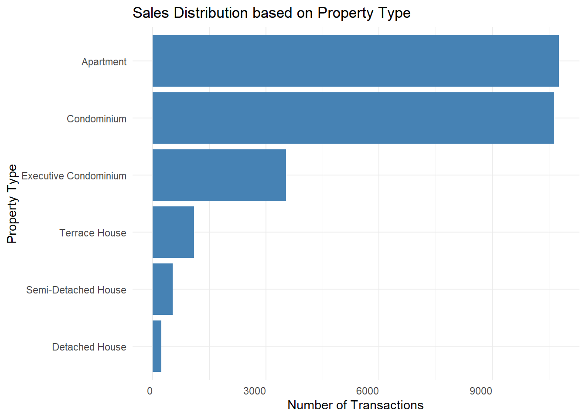

pacman::p_load(tidyverse, scales,
lubridate, ggrepel,
ggthemes, hrbrthemes,
patchwork, knitr) Take-home Exercise 1
Overview
Setting the Scene
There are two major residential property markets in Singapore, namely public and private housing. Public housing aims to meet the basic needs of the general public with a monthly household income of less than or equal to S$14,000. For families with a monthly household income of more than S$14,000, they need to turn to the private residential market.
The Task
In this task, I am to assume the role of a graphical editor of a median company. I have been requested to prepare a minimum of two and a maximum of three data visualisations to reveal the private residential market and its sub-markets in Singapore for the 1st quarter of 2024.
Getting Started
Loading Packages
| Library | Description |
|---|---|
| pacman | Pacman is a package that makes it possible to perform tasks associated with add-on packages in a more convenient manner. It checks whether the add-on packages are installed or not. If not, it will automatically install and load them into the R environment. In this take-home exercise 1, the pacman package has been installed beforehand. |
| tidyverse | A collection of core packages designed for data science, used extensively for data preparation and wrangling. Content includes: ggplot2, dplyr, tidyr, readr, purr, tibble, stringr, forcats, scales, lubridate, etc. |
| scales | This package is designed to enhance how data is presented in visualisation, particularly in ggplot2 plots. It provides tools for mapping data to aesthetic attributes like colours, shapes, and sizes more effectively. It also includes functions for formatting and transforming axes and legends in a chart. Even though this is part of the tidyverse package collection, it needs to be installed and loaded separately. |
| lubridate | It is a package to work with date-times and time-spans: fast and user-friendly parsing of date-time data, extraction and updating of components of a date-time (years, months, days, hours, minutes, and seconds), algebraic manipulation on date-time and time-span objects. This is part of the tidyverse collection, but it is not automatically loaded, so I will need to load it explicitly as I plan to use its functionality. |
| ggrepel | An R package provides geoms for ggplot2 to repel overlapping text labels. This is not part of the tidyverse package collection, but it is an extension of ggplot2. |
| ggthemes | Another separate R package that provides additional themes and scales for ggplot2 to enhance the appearance of plots. This package will also need to be installed and loaded independently. |
| hrbrthemes | This package provides additional typography-centric themes and theme components for ggplot2, focused on improving readability and appearance for data visualisation. It must be installed and loaded independently. |
| patchwork | This one is also an extension package for ggplot2 that allows combining multiple ggplot2 plots into one (composite figure) and arranging them in various layouts. Even though patchwork complements the functionality of ggplot2, it is independently maintained and must be installed and loaded separately. |
The following code chunk utilises the p_load() function from the pacman package to ensure that the necessary packages are available in the R environment. If the packages are already installed on the computer, p_load() will load them. If they are not installed, it will first install them and then load them into the R environment.
Loading The Data
The Datasets
There are five datasets that cover from the start of the 1st quarter 2023 to the end of the 1st quarter 2024, I decided to load each dataset in a separate code chunk for better clarity in understanding the data types.
Quarter 1, Year 2023:
q1_2023 <- read_csv("data/ResidentialTransaction20240308160536.csv")Rows: 4722 Columns: 21
── Column specification ────────────────────────────────────────────────────────
Delimiter: ","
chr (15): Project Name, Sale Date, Address, Type of Sale, Type of Area, Nett...
dbl (1): Number of Units
num (5): Transacted Price ($), Area (SQFT), Unit Price ($ PSF), Area (SQM),...
ℹ Use `spec()` to retrieve the full column specification for this data.
ℹ Specify the column types or set `show_col_types = FALSE` to quiet this message.Quarter 2, Year 2023:
q2_2023 <- read_csv("data/ResidentialTransaction20240308160736.csv")Rows: 6125 Columns: 21
── Column specification ────────────────────────────────────────────────────────
Delimiter: ","
chr (15): Project Name, Sale Date, Address, Type of Sale, Type of Area, Nett...
dbl (1): Number of Units
num (5): Transacted Price ($), Area (SQFT), Unit Price ($ PSF), Area (SQM),...
ℹ Use `spec()` to retrieve the full column specification for this data.
ℹ Specify the column types or set `show_col_types = FALSE` to quiet this message.Quarter 3, Year 2023:
q3_2023 <- read_csv("data/ResidentialTransaction20240308161009.csv")Rows: 6206 Columns: 21
── Column specification ────────────────────────────────────────────────────────
Delimiter: ","
chr (15): Project Name, Sale Date, Address, Type of Sale, Type of Area, Nett...
dbl (2): Area (SQM), Number of Units
num (4): Transacted Price ($), Area (SQFT), Unit Price ($ PSF), Unit Price ...
ℹ Use `spec()` to retrieve the full column specification for this data.
ℹ Specify the column types or set `show_col_types = FALSE` to quiet this message.
Note
As can be seen above, I noticed that in this particular dataset (Quarter 3, Year 2023), the data type for column Area (SQM) is ‘dbl’ (double), while in all the other four datasets, the data type for column Area (SQM) is ‘num’ (numeric). As far as I know, R does not differentiate between ‘dbl’ and ‘num’, so in this case, I will leave it as ‘dbl’ data type.
Quarter 4, Year 2023:
q4_2023 <- read_csv("data/ResidentialTransaction20240308161109.csv")Rows: 4851 Columns: 21
── Column specification ────────────────────────────────────────────────────────
Delimiter: ","
chr (15): Project Name, Sale Date, Address, Type of Sale, Type of Area, Nett...
dbl (1): Number of Units
num (5): Transacted Price ($), Area (SQFT), Unit Price ($ PSF), Area (SQM),...
ℹ Use `spec()` to retrieve the full column specification for this data.
ℹ Specify the column types or set `show_col_types = FALSE` to quiet this message.Quarter 1, Year 2024:
q1_2024 <- read_csv("data/ResidentialTransaction20240414220633.csv")Rows: 4902 Columns: 21
── Column specification ────────────────────────────────────────────────────────
Delimiter: ","
chr (15): Project Name, Sale Date, Address, Type of Sale, Type of Area, Nett...
dbl (1): Number of Units
num (5): Transacted Price ($), Area (SQFT), Unit Price ($ PSF), Area (SQM),...
ℹ Use `spec()` to retrieve the full column specification for this data.
ℹ Specify the column types or set `show_col_types = FALSE` to quiet this message.
Note
I also noticed that the Sale Date data type format in all of these five datasets is ‘chr’ (character). I will parse/convert them into date-time format.
Data Preparation
Data will be processed using the appropriate ‘tidyverse’ family of packages. Statistical graphics will be created using ‘ggplot2’ and its extensions.
Parsing Data Type
Parsing the Sale Date column into date-time format using ‘lubridate’ package
q1_2023 <- q1_2023 %>%
mutate(`Sale Date` = dmy(`Sale Date`))
q2_2023 <- q2_2023 %>%
mutate(`Sale Date` = dmy(`Sale Date`))
q3_2023 <- q3_2023 %>%
mutate(`Sale Date` = dmy(`Sale Date`))
q4_2023 <- q4_2023 %>%
mutate(`Sale Date` = dmy(`Sale Date`))
q1_2024 <- q1_2024 %>%
mutate(`Sale Date` = dmy(`Sale Date`))Explanation:
The
mutate()function is used to modify the Sale Date column directly.- Since the column name has a space in it, I need to use backticks to refer to it within the
mutate()function.
- Since the column name has a space in it, I need to use backticks to refer to it within the
The
dmy()function from the ‘lubridate’ package will parse the date strings into actual Date objects.
Next, using the code below, I will check and confirm that the data types have been converted properly.
class(q1_2023$`Sale Date`)[1] "Date"class(q2_2023$`Sale Date`)[1] "Date"class(q3_2023$`Sale Date`)[1] "Date"class(q4_2023$`Sale Date`)[1] "Date"class(q1_2024$`Sale Date`)[1] "Date"Merge the Data
After standardising the data in all five datasets, I will then merge these datasets together using the bind_rows() function from the ‘dplyr’ package. This function stacks data frames on top of each other, combining them into a single data frame. It’s important that all data frames have the same columns for bind_rows() to work correctly.
combined_data <- bind_rows(q1_2023, q2_2023, q3_2023, q4_2023, q1_2024)Inspect the Merged Data
After merging, it’s good practice to check the combined dataset to ensure everything looks as expected:
# Check the structure of the combined data
str(combined_data)tibble [26,806 × 21] (S3: tbl_df/tbl/data.frame)
$ Project Name : chr [1:26806] "THE REEF AT KING'S DOCK" "URBAN TREASURES" "NORTH GAIA" "NORTH GAIA" ...
$ Transacted Price ($) : num [1:26806] 2317000 1823500 1421112 1258112 1280000 ...
$ Area (SQFT) : num [1:26806] 883 883 1076 1033 872 ...
$ Unit Price ($ PSF) : num [1:26806] 2625 2066 1320 1218 1468 ...
$ Sale Date : Date[1:26806], format: "2023-01-01" "2023-01-02" ...
$ Address : chr [1:26806] "12 HARBOURFRONT AVENUE #05-32" "205 JALAN EUNOS #08-02" "29 YISHUN CLOSE #08-10" "45 YISHUN CLOSE #07-42" ...
$ Type of Sale : chr [1:26806] "New Sale" "New Sale" "New Sale" "New Sale" ...
$ Type of Area : chr [1:26806] "Strata" "Strata" "Strata" "Strata" ...
$ Area (SQM) : num [1:26806] 82 82 100 96 81 ...
$ Unit Price ($ PSM) : num [1:26806] 28256 22238 14211 13105 15802 ...
$ Nett Price($) : chr [1:26806] "-" "-" "-" "-" ...
$ Property Type : chr [1:26806] "Condominium" "Condominium" "Executive Condominium" "Executive Condominium" ...
$ Number of Units : num [1:26806] 1 1 1 1 1 1 1 1 1 1 ...
$ Tenure : chr [1:26806] "99 yrs from 12/01/2021" "Freehold" "99 yrs from 15/02/2021" "99 yrs from 15/02/2021" ...
$ Completion Date : chr [1:26806] "Uncompleted" "Uncompleted" "Uncompleted" "Uncompleted" ...
$ Purchaser Address Indicator: chr [1:26806] "HDB" "Private" "HDB" "HDB" ...
$ Postal Code : chr [1:26806] "097996" "419535" "269343" "269294" ...
$ Postal District : chr [1:26806] "04" "14" "27" "27" ...
$ Postal Sector : chr [1:26806] "09" "41" "26" "26" ...
$ Planning Region : chr [1:26806] "Central Region" "East Region" "North Region" "North Region" ...
$ Planning Area : chr [1:26806] "Bukit Merah" "Bedok" "Yishun" "Yishun" ...# View the first few rows to confirm data looks correct
head(combined_data)# A tibble: 6 × 21
`Project Name` `Transacted Price ($)` `Area (SQFT)` `Unit Price ($ PSF)`
<chr> <dbl> <dbl> <dbl>
1 THE REEF AT KING'S … 2317000 883. 2625
2 URBAN TREASURES 1823500 883. 2066
3 NORTH GAIA 1421112 1076. 1320
4 NORTH GAIA 1258112 1033. 1218
5 PARC BOTANNIA 1280000 872. 1468
6 NANYANG PARK 5870000 3323. 1767
# ℹ 17 more variables: `Sale Date` <date>, Address <chr>, `Type of Sale` <chr>,
# `Type of Area` <chr>, `Area (SQM)` <dbl>, `Unit Price ($ PSM)` <dbl>,
# `Nett Price($)` <chr>, `Property Type` <chr>, `Number of Units` <dbl>,
# Tenure <chr>, `Completion Date` <chr>, `Purchaser Address Indicator` <chr>,
# `Postal Code` <chr>, `Postal District` <chr>, `Postal Sector` <chr>,
# `Planning Region` <chr>, `Planning Area` <chr># Check for any missing values or anomalies
summary(combined_data) Project Name Transacted Price ($) Area (SQFT) Unit Price ($ PSF)
Length:26806 Min. : 440000 Min. : 322.9 Min. : 138
Class :character 1st Qu.: 1280000 1st Qu.: 721.2 1st Qu.:1384
Mode :character Median : 1660000 Median : 990.3 Median :1762
Mean : 2143286 Mean : 1191.6 Mean :1852
3rd Qu.: 2320000 3rd Qu.: 1302.4 3rd Qu.:2260
Max. :392180000 Max. :144883.4 Max. :5756
Sale Date Address Type of Sale Type of Area
Min. :2023-01-01 Length:26806 Length:26806 Length:26806
1st Qu.:2023-04-29 Class :character Class :character Class :character
Median :2023-07-28 Mode :character Mode :character Mode :character
Mean :2023-08-11
3rd Qu.:2023-11-20
Max. :2024-03-31
Area (SQM) Unit Price ($ PSM) Nett Price($) Property Type
Min. : 30.0 Min. : 1484 Length:26806 Length:26806
1st Qu.: 67.0 1st Qu.:14893 Class :character Class :character
Median : 92.0 Median :18966 Mode :character Mode :character
Mean : 110.5 Mean :19930
3rd Qu.: 121.0 3rd Qu.:24327
Max. :13460.0 Max. :61962
NA's :6
Number of Units Tenure Completion Date
Min. : 1.000 Length:26806 Length:26806
1st Qu.: 1.000 Class :character Class :character
Median : 1.000 Mode :character Mode :character
Mean : 1.005
3rd Qu.: 1.000
Max. :60.000
Purchaser Address Indicator Postal Code Postal District
Length:26806 Length:26806 Length:26806
Class :character Class :character Class :character
Mode :character Mode :character Mode :character
Postal Sector Planning Region Planning Area
Length:26806 Length:26806 Length:26806
Class :character Class :character Class :character
Mode :character Mode :character Mode :character
Save the Merged Dataset
Since I may need to use to use this merged datasets repeatedly, I will save it into a file for easy access in future sessions. I will use write_csv() function from the ‘readr’ package (part of the ‘tidyverse’) to write this merged data frame to a CSV file.
write_csv(combined_data, "data/All_ResidentialTransactions_2023-2024.csv")Proceed with Visualisation and Analysis
Now that the data has been consolidated into a single dataframe, it is time to move forward with analysis:
After completing all the previous setup and loading libraries, the next step is to create the visualisations to gather insights from the data.
Monthly Sales Volume Visualisation with Average Reference Line
# Generate a Month-Year field for the x-axis and calculate total sales volume
monthly_sales_stats <- combined_data %>%
mutate(Month = floor_date(`Sale Date`, unit = "month")) %>%
group_by(Month) %>%
summarise(Total_Sales_Volume = sum(`Number of Units`, na.rm = TRUE)) %>%
ungroup() %>%
arrange(Month)
# Calculate the average monthly sales volume
average_sales_volume <- mean(monthly_sales_stats$Total_Sales_Volume)
# Create the line chart visualizing monthly sales volume and add the average reference line
monthly_sales_line_chart <- ggplot(monthly_sales_stats, aes(x = Month, y = Total_Sales_Volume)) +
geom_line(color = "black") + # Line color
geom_point(color = "black") + # Point color
geom_hline(yintercept = average_sales_volume, linetype = "dotted", color = "red", size = 1) +
scale_x_date(date_breaks = "1 month", date_labels = "%b %Y") +
theme_minimal() +
labs(
title = "Monthly Sales Volume with Average Reference Line",
x = "Month",
y = "Total Units Sold"
) +
theme(axis.text.x = element_text(angle = 90, hjust = 1)) # Rotate the x-axis text for better readability
# Print the plot
monthly_sales_line_chartThe visualisation illustrates the monthly sales volume trend for private housing units from January 2023 to March 2024. The trend exhibits significant fluctuations throughout the period, with peaks and troughs corresponding to market activities. Notably, there is a sharp increase in March 2024 as compared to February 2024, suggesting a spike in sales. Huttons Asia’s chief executive, Mark Yip, attributes this to the resumption of project launches in March following the Chinese New Year festive lull, which had a spillover effect on the resale market (Yip, 2024). The red dotted line represents the average sales volume over the period, providing a benchmark for monthly performance comparison. Months above this line experienced higher-than-average sales, while those below indicated fewer transactions, highlighting the variable buyer activity throughout the year.
Citation: Yip, M. (2024, April 26). Condo resale prices inch up in March as volume rebounds 17.4%. The Straits Times. Retrieved from [https://www.straitstimes.com/singapore/housing/condo-resale-prices-inch-up-in-march-as-volume-rebounds-174]
Sales Distribution based on Property type in Singapore Private Residential Market
# First, we aggregate the number of units sold by property type
property_type_distribution <- combined_data %>%
group_by(`Property Type`) %>%
summarise(Transactions = n(), .groups = 'drop')
# Now, we plot the distribution
property_type_chart <- ggplot(property_type_distribution, aes(x = Transactions, y = reorder(`Property Type`, Transactions))) +
geom_bar(stat = "identity", fill = "steelblue", orientation = "y") + # All bars in 'steelblue'
theme_minimal() +
labs(title = "Sales Distribution based on Property Type",
x = "Number of Transactions",
y = "Property Type") +
theme(axis.text.x = element_text(angle = 0, hjust = 1),
legend.position = "none") # Remove legend
# Print the plot
print(property_type_chart)
The bar chart illustrates the frequency of transactions across different property types in Singapore’s private residential market. Condominiums and apartments are the most commonly traded, suggesting a high demand for such property types, which could be due to their affordability and availability. Executive condominiums and detached houses represent a smaller fraction, likely reflecting their higher price points and more exclusive market position. The varied transaction volume across property types offers valuable insight into consumer preferences and the real estate market’s dynamics, particularly indicating a trend towards high-density living options.
Conclusion
The Singapore private residential market shows a lively character, affected by elements such as timing in the market and kinds of property. The big rise in sales amount during March 2024 shown by the first graph emphasizes how new project starts after festive time can greatly influence buyer interest and increase selling activities, as commented from Mark Yip at Huttons Asia.
The second visualisation supports this by displaying a strong inclination in the market towards condominiums and apartments, which represent the majority of transaction volumes.
In combination, the observations emphasize how the real estate market is cyclical and influenced by cultural as well as economic activities. Such information holds great importance for stakeholders such as investors, developers and policymakers who require these details to decide wisely. The ongoing inclination towards high-density living implies that the focus on developing and investing in condominiums and apartments may persist, possibly aligning with majority buyers’ need for affordability combined with lifestyle preference in Singapore.